Python 安装与上手：从装环境到跑通第一个 AI 项目
AI Engineer Journey / 图文教程 02 写给和我一样有 Java / 前端基础、但 Python 零基础的开发者。 本文所有终端截图均为本机真实运行结果（macOS + Python 3.13），命令可直接照抄。
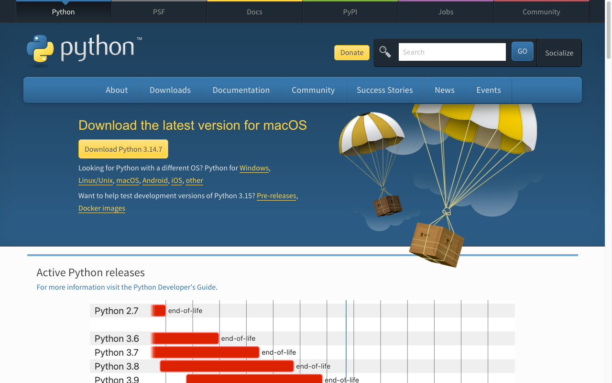
写在前面
上一篇搞清楚了 Python 的来历和生态（没看的先看这篇）。
这篇解决最实际的问题：怎么装、怎么跑、怎么学、练什么项目。
我会像Java 里配 JDK + Maven 那样，把 Python 的环境一次性配明白，每个步骤都留了真实运行截图。
一、安装：四种方式怎么选
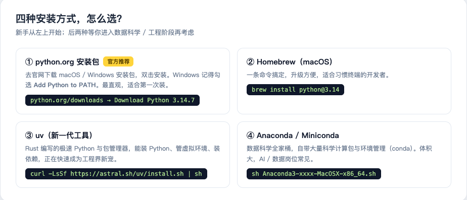
新手建议：Windows / macOS 都直接用官网安装包，别一上来就整 Anaconda。
具体步骤（macOS 为例）：
- 打开 python.org/downloads，点黄色大按钮下载（截图中是 Python 3.14.7，带 .pkg 安装包）
- 双击安装，一路下一步
- Windows 用户注意：第一屏务必勾选 "Add Python to PATH"（不勾 = 命令行里找不到 python，新手第一大坑）
- 验证安装 ↓
python3 --version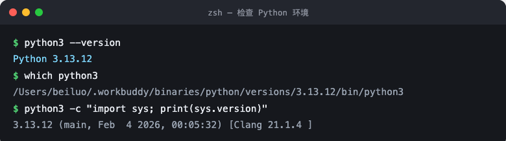
--version 正常输出版本号，就等于 Java 里 java -version 成功了。顺手用 which python3 看看它装在哪，相当于确认 JAVA_HOME。
小知识：macOS 自带一个老版本 Python 是系统内部用的，别去动它。装完新版后用
python3命令调用的就是你自己的版本。
二、第一次运行：三种打开方式
方式一：交互式解释器（REPL）—— Python 的 jshell
python3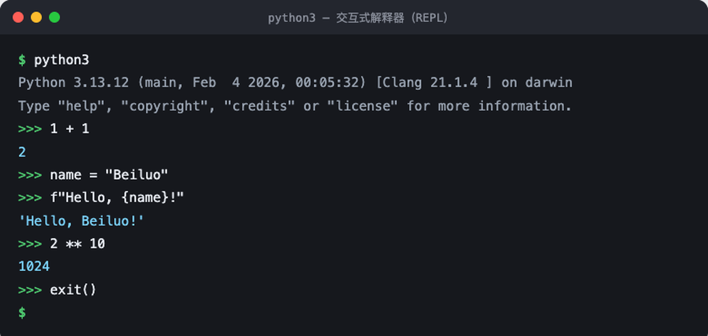
输入 exit() 或按 Ctrl+D 退出。适合随手验证一行代码，我学语法时天天开。
方式二：脚本文件—— 正式的运行方式
新建 hello.py：
# 我的第一个 Python 程序
print("Hello, AI Engineer Journey!")
name = "Beiluo"
year = 2026
print(f"{name} 开始学 Python 的年份: {year}")运行：
python3 hello.py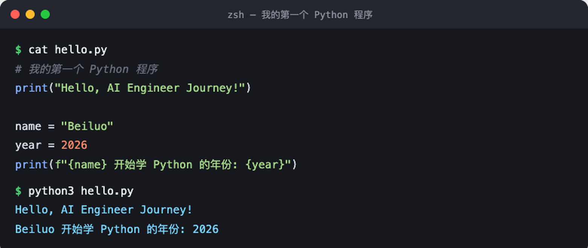
Java 对照：最大的体验差异在这里
| Java | Python | |
|---|---|---|
| 编译 | 需要 javac 编译成 .class | 无需编译，直接跑源码 |
| 入口 | 必须 main 方法 | 脚本从上往下执行，没有入口仪式 |
| 变量 | 必须声明类型 | 直接赋值，类型跟着值走 |
| 输出 | System.out.println() | print() |
Python 也有 .pyc 字节码缓存（在 __pycache__ 目录），机制上和 JVM 有相通之处，但它把编译步骤隐藏了。
三、直接上真实场景：list + dict
光 print 不过瘾。AI 项目里最高频的数据结构是 list + dict 组合——LLM 的对话历史就是这样的结构：
history = []
history.append({"role": "user", "content": "什么是 Token？"})
history.append({"role": "assistant", "content": "模型处理文本的最小单位。"})
history.append({"role": "user", "content": "那 Embedding 呢？"})
for i, m in enumerate(history, start=1):
print(f"{i}. [{m['role']:9s}] {m['content']}")
# 列表推导式：一行提取所有用户提问（Java Stream 的极简版）
questions = [m["content"] for m in history if m["role"] == "user"]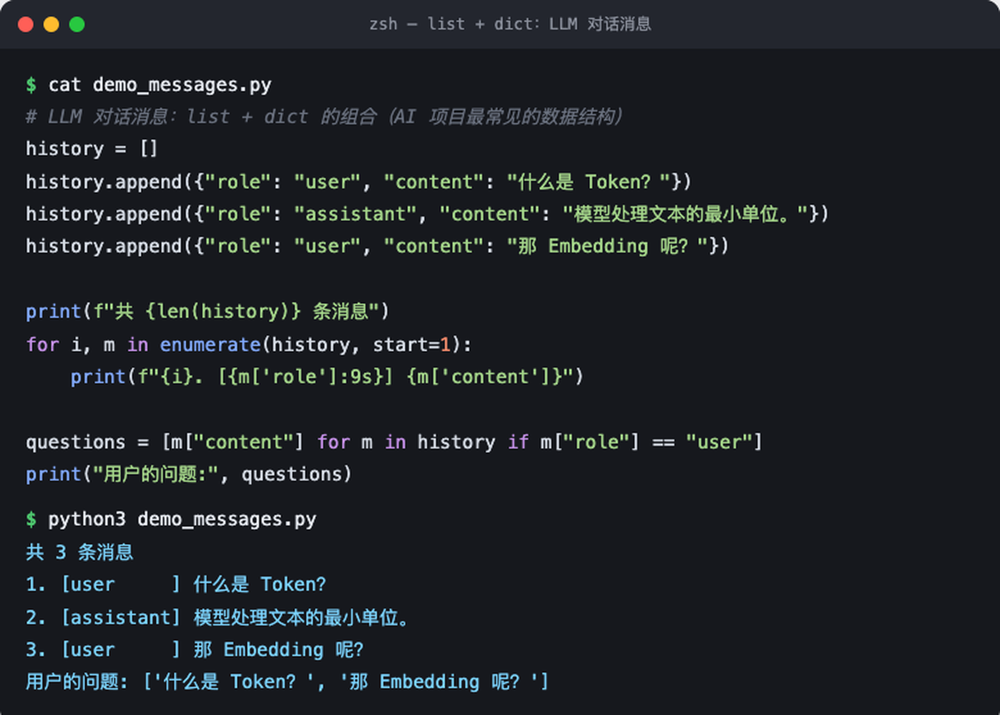
Java 对照：list ≈ ArrayList，dict ≈ HashMap，列表推导式 ≈ stream().filter().map().toList()。记住一个事实：LLM API 的请求体就是「一个 dict，里面套一个 list of dict」，看懂这个，AI 代码就祛魅了一半。
四、venv 与 pip：把 Maven 那套经验搬过来
Java 里每个项目有独立的 pom.xml 依赖集，Python 里对应的是虚拟环境（venv）：
python3 -m venv demo-venv # 创建（相当于初始化一个项目级依赖目录）
source demo-venv/bin/activate # 激活（Windows: demo-venv\Scripts\activate）
pip list # 查看已装的包（相当于 mvn dependency:list）
deactivate # 退出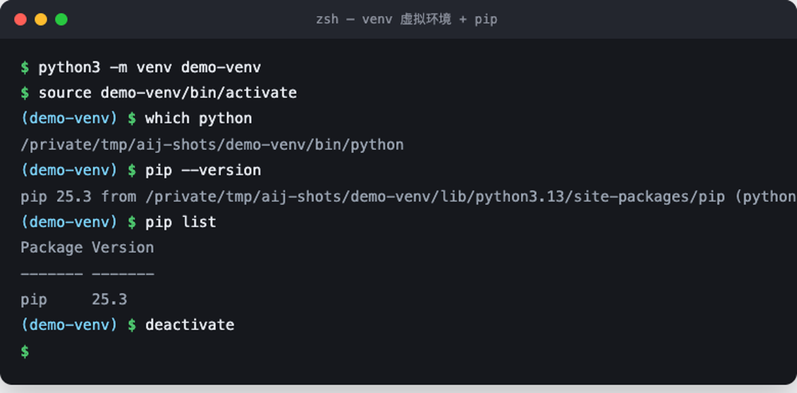
三个关键对应关系：
| Java | Python | 备注 |
|---|---|---|
| Maven Central | PyPI | 近 90 万个包 |
pom.xml | requirements.txt | 依赖清单 |
mvn install | pip install -r requirements.txt | 一键还原依赖 |
| JDK 版本切换 | venv 可指定不同 Python 版本 |
新手规则只有一条：每个项目都建 venv，别往全局装包。
五、学习路线：从 Python 到 AI Engineer
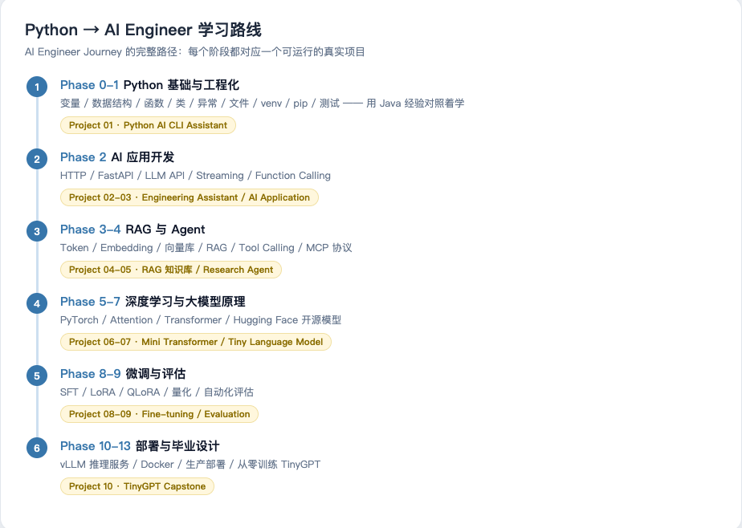
这是我自己在走的路线（本仓库 README 有完整版），核心思路是 Project First：
- Phase 0-1：Python 基础 + 工程化 —— 不单独背语法，直接在项目里学
- Phase 2：AI 应用开发 —— HTTP、FastAPI、LLM API、流式输出
- Phase 3-4：RAG 与 Agent —— Embedding、向量库、Tool Calling、MCP
- Phase 5-7：深度学习 —— PyTorch、Attention、Transformer 原理
- Phase 8-9：微调与评估 —— LoRA / QLoRA、量化
- Phase 10-13：部署与毕业设计 —— vLLM、Docker、从零训练 TinyGPT
给 Java 同行的学习建议：
- 别抱着语法书啃。有编程基础的人，Python 语法两周就能上手感，重点是尽快进入项目
- 盯紧动态类型的坑：
"1" + 1会报错（强类型）、变量可以随便换类型（动态类型）、True/False/None首字母大写、缩进就是语法块 - 每学一个知识点就跑一个 Demo，用 REPL 随手验证
六、练什么项目：从入门到 AI
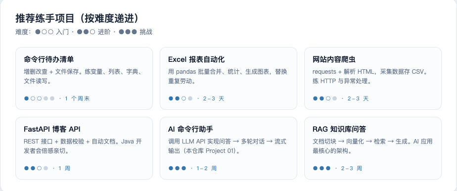
我自己正在做的第一个真项目就是图里的第五个：AI 命令行助手（输入问题 → 调用 LLM API → 输出答案）。整个仓库就是按这个项目驱动的方式组织的：
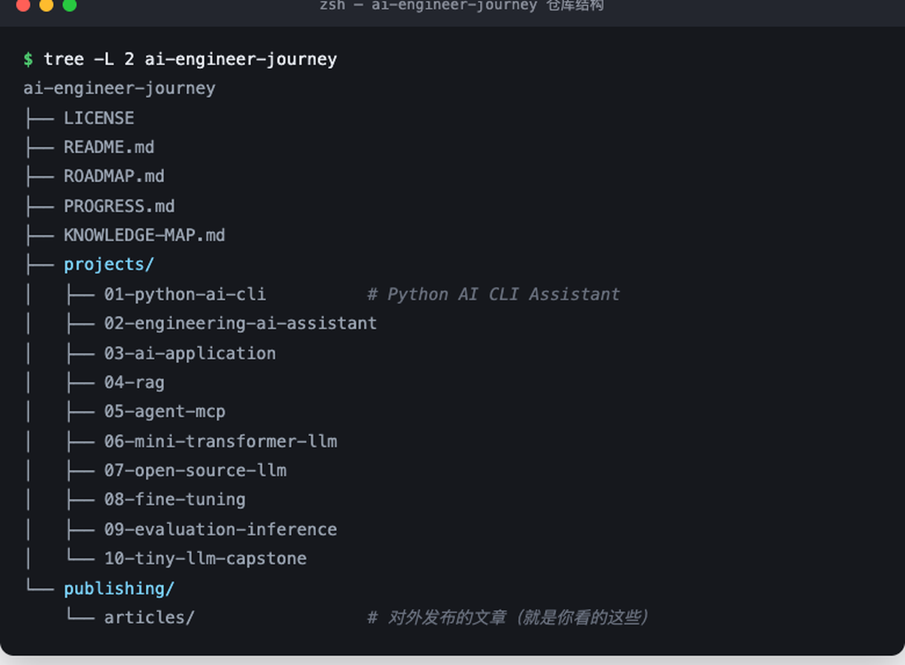
它已经能真实跑起来了——下面是我本机真实运行的结果（调用 DeepSeek API）：
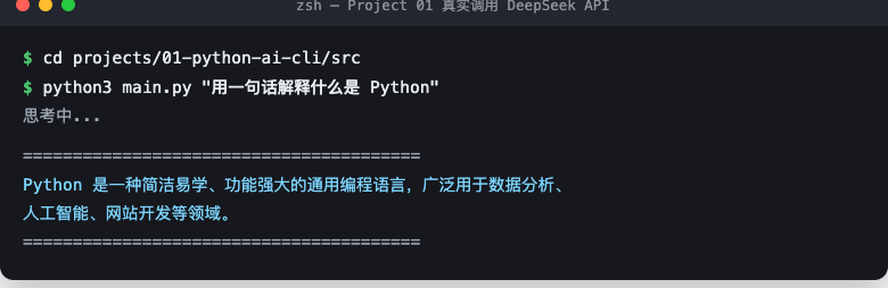
从「输入一个问题」到「AI 回答」，核心只涉及：dict 构造请求体 + JSON 序列化 + HTTP POST + 异常处理。这些恰好就是 Python 入门知识点的全集——所以它能当第一个项目。
七、新手常踩的坑（我踩过的）
- Windows 没勾 Add to PATH → 重装，勾上
python命令不存在：macOS/Linux 用python3- pip 装错环境：装包前先激活 venv，用
which pip确认指向 venv 内 - Tab 和空格混用 →
IndentationError，全用 4 空格（交给编辑器） - 中文输出乱码：读文件时显式
encoding="utf-8"
八、小结
- 装环境：官网安装包 →
python3 --version验证，10 分钟搞定 - 跑代码：REPL 随手试 + 脚本文件正式跑，无需编译
- 管依赖：venv 隔离 + pip 安装，Maven 经验直接平移
- 学路线：Project First，别脱离项目背语法
- 练项目：从 CLI 小工具一路练到 AI 命令行助手、RAG 知识库
本系列下一篇计划：《从 0 手写一个 AI 命令行助手》（Project 01 全过程实录）。 仓库：github.com/beiluoL/ai-engineer-journey —— 每个阶段都是可运行的真实项目。
本文是 AI Engineer Journey 的图文教程系列。所有终端截图均为本机真实运行结果，环境：macOS 15 + Python 3.13。